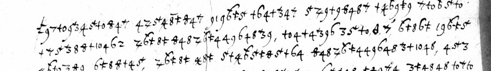

At a glanceKey from adjacent plaintext · complete
- The letter
- The officials and citizens of the Smolensk palatinate, shut in Smolensk by Shein’s army, to Krzysztof Radziwiłł, Lithuanian field hetman, 1 June 1633, with about seventeen signatures.
- Where
- AGAD Warsaw, Archiwum Warszawskie Radziwiłłów dz. II nr 1116, two leaves on microfilm on szukajwarchiwach.gov.pl. The catalogue calls it a cipher letter with news of events.
- The cipher
- A simple substitution with word division. The 24 signs are digits told apart by where a cross stroke sits: on top, through the figure, or standing free.
- How the key was found
- The clear close’s W.X.Mci matched a repeated group, and a repeated long word fitted nieprzyiaciel. Once the cross positions were told apart, the first line read off and gave the rest of the key.
- What it says
- Letters can hardly get out and the enemy is at the walls. The writers beg the hetman not to let the town perish through slow relief: już to ósmy miesiąc w tey niewoli trwamy.
- Still open
- One word of 11 signs is unread. Fifteen words rest on a doubtful sign and are taken from the sense of the sentence.
01 The letter
Smolensk was besieged by the Muscovite army of Mikhail Shein from October 1632 until Władysław IV relieved it in September 1633. Krzysztof Radziwiłł, field hetman of Lithuania, lay with the Lithuanian army near Krasne, and the garrison sent him messengers through the siege lines. Mirosław Nagielski printed five ciphered letters of the deputy governor Samuel Sokoliński from 31 May to 30 June 1633, which reached the hetman together on 4 July. This letter, dated 1 June 1633, is not among them: it comes from the officials and citizens of the palatinate, and the clear close on f. 2 carries about seventeen signatures.
The unit, AGAD Archiwum Radziwiłłów dz. II nr 1116, has two leaves on microfilm. F. 1r holds the clear heading 1633 Junii 1 and salutation, then 35 lines of cipher. F. 2r holds two more lines of cipher, then the clear close and the signatures. There is no decipherment between the lines or on the address leaf.

02 The cipher
Each letter has one sign, and the words are spaced as in clear. The signs are digits, and what tells them apart is the cross stroke. A plain 7 is g, a 7 with a small cross on its top is m, and a z-shaped 7 struck through is p. A free cross with a foot is z, and a plain free cross is s. The three groups of 1 and 0 are three letters: ŧ0 is w, +0 is u, and a plain 10 is k. A delta sign stands for the X of W.X.Mci (Waszey Xiążęcey Mości, Your Princely Grace).
| letter | sign | letter | sign | letter | sign |
|---|---|---|---|---|---|
| a | 9 | i, y, j | 4 | r | 6 with a top flag (б) |
| ą | 9 marked | k | 10 | s, ś | free + |
| b | 1 | l, ł | 3 with top cross | t | 4 struck through |
| c, ć | 6 | m | 7 with top cross | u | +0 |
| d | 3 | n, ń | 8 struck through | w | ŧ0 |
| e | 8 | o, ó | 5 with top cross | z, ż, ź | free ŧ |
| ę | 8 with overbar | p | 7 struck through | h (ch = 6 2) | 2 |
| f | 5 | g | 7 |
There are no nulls and no code words. Names and titles are spelled out: Smoleńska, Kró. Mci, W.X.Mci. The index of coincidence over the 1,856 signs is 0.068.
03 How the key was recovered
A first transcription treated every crossed digit as one sign. On that, a substitution solver scored on a Polish language model gave noise, and so did a reading of the crossed digits as the numbers 10 to 19. With one letter per sign the solver threw up fragments such as wiadomosli, which suggested the signs were the right kind but had been merged.
Two cribs then took hold. The clear close has W.X.Mci, and the cipher has the group ŧ0 Δ 7 6 4 four times, which gave w, m, c and i. A twelve-sign word repeated three times fitted nieprzyiaciel if the flagged 6 and the free cross were two letters, r and z. At higher zoom the crosses split by position, and line 1 read straight off as Za gwałtownym i potężnym a barzo ścisłym opasaniem straża murów smoleńskich. Lines 1–7 completed the key, all 24 signs.
The page was then transcribed again in the finer classes, and the key was applied mechanically. Words that did not read sent the work back to the image at 3.5–5×. Four were corrected that way: przemysłów, przy uniżonych prozbach, po rożnych and z uniżonemi.
A statistical check on the Polish model (docs/_validate.py) scores the reading at
−2.52 per letter. Random keys score −5.75, and a key fitted to the shuffled ciphertext −4.17 (z 86):
a pass. The method counts as a key recovered from adjacent plaintext, because the formula of the clear close was the
first crib; everything else came from the cipher.
04 The decipherment
The Polish is given in the letter’s own spelling (prozba, rożnych, s pośrzodku, wszytkich, i for j). Diacritics the cipher does not mark are supplied. [?] follows a word read from sense where a sign is doubtful. The full text with the transcription is under Full texts below.
Za gwałtownym i potężnym a barzo ścisłym opasaniem straża murów smoleńskich przez nieprzyiaciela wysyłać do W.X.M.
rzecz barzo trudna, często [?] przez też ostrożności nieprzyiacielskie. I od W.X.Mci długi czas wiadomości nie mamy,
co się z nami dzieie w murach. A nieprzyiaciel, iako potężnie [?] nasadziwszy wszytkich swych przemysłów, fortelów,
podkopami, z dział biciem, rowów kopaniem iuż pod same mury przyszedszy, usiłuie dobić Smoleńska. […]
Zaiste nieszczęśliwiśmy synowie w oyczyźnie […] gdzi obietnice, obowiązki przysiąg senatorskich, żeśmy za
kilka niedziel mieli być oswobodzeni przez odsiecz, a teraz iuż to ósmy miesiąc w tey niewoli trwamy, w którey
codzień i godzinę [?] wyglądamy zginienia [?] i śmierci pewney [?] od tego okrutnika krzywoprzysiężcy.
In English: “Because the enemy has encircled the walls of Smolensk so violently, so powerfully and so very tightly, sending to Your Princely Grace is a very difficult matter, often so because of the enemy’s watchfulness. We have had no news from Your Princely Grace for a long time, nor have you of what is happening to us within the walls. The enemy, having set up all his devices and stratagems, with mines, with the battering of his guns and the digging of trenches, has now come right up to the walls and is trying to finish Smolensk off.” The writers ask the hetman not to let the town, its churches, clergy, children, women, nobility and common people perish through slow relief, since he took its rescue upon himself. They point out that the enemy has split his strength among his camps, earthworks and blockhouses, so a sortie from the walls could join his advance. And they remind him that the senators promised relief within a few weeks, while they are now in the eighth month of the siege.
05 What remains uncertain
- One word unread: the end of line 13 with the start of line 14, after racz. Its signs decode as pospeieci-ba-czyć, which is no word. The second half is probably baczyć (“deign to look to”); the first half is miswritten or misread. A small 1 and two crosses are unclear on the microfilm.
- Fifteen words rest on one doubtful sign each (82 signs, 4.4%). Most come from the cross positions, which the
microfilm blurs: ŧ0 against +0, a plain 4 against a struck 4, and the two crossed 7s. They are listed with their signs
in
reading.tsv; each gives sense in its sentence. - Whether Sokoliński’s letters printed by Nagielski use the same cipher has not been tested: their originals were not seen. If they do, this key would read them, and the contemporary copy AR dz. II nr 1115 would check this reading.
- The clear close is only partly transcribed, and the signatures not at all.
Full texts
The transcription and the decryption of every document on this page, so that the reading can be used and checked. Short files are shown here; all are in the repository.
AGAD AR dz. II nr 1116, Smolensk, 1 June 1633
The officials and citizens shut in Smolensk by Shein's Muscovite army write to the Lithuanian field hetman that letters can hardly get out, the enemy is at the walls with mines, guns and trenches, and they cannot hold much longer. They beg him to relieve the town without delay, point out that the besiegers are split among their camps and blockhouses so a sortie could join his advance, and remind him that relief was promised within weeks while they are now in the eighth month of the siege.
Transcription
# AGAD, Archiwum Radziwiłłów dz. II, nr 1116 (zesp. 354, 1/354/0/2.1/1116): cipher letter from the besieged at # Smolensk to Krzysztof Radziwiłł, 1 June 1633. Scan 4 = f. 1r (cipher, about 37 lines), scan 5 = f. 2 (2 cipher lines, # then clear close and signatures). Images: https://www.szukajwarchiwach.gov.pl/jednostka/-/jednostka/29638410 # Transcribed from the 2520x3626 scan by Claude (Opus 5.5), 5 Nov 2026. # # Sign notation (one cipher sign per item; the alphabet is built from digits told apart by where a cross sits): # 1 2 3 4 5 6 7 8 9 plain digits # 3^ 5^ 7^ digit with a small cross on its top (ᵗ3, 5ᵗ, ᵗ7) # 6^ 6 with a flag on its top (б) # 4/ 7/ 8/ digit struck through (4 with crossed stem, z-shaped 7, 8 with a bar through the top loop) # 8^ 8 with an overbar # t free cross with a foot or double bar (ŧ) # + free plain cross # t0 +0 10 the three 1-0 groups (footed cross + 0, plain cross + 0, plain 1 + 0); 0 never stands alone # D delta sign # , comma written in the cipher # Signs in a word are separated by dots; words by spaces, as on the page. ? after a sign = doubtful reading of that # sign; [..] = sign not legible. Line numbers are page lines of f. 1r. A word broken at a line end is written with -. # f1r.01 t.9.7.t0.9.3^.4/.5^.t0.8/.4.7^ 4.7/.5^.4/.8^.t.8/.4.7^ 9.1.9.6^.t.5^ +.6.4.+.3^.4.7^ 5^.7/.9.+.9.8/.4.8.7^ +.4/.6^.9.t.9 7^.+0.6^.5^.t0 f1r.02 +.7^.5^.3^.8.8/.+.10.4.6.2 7/.6^.t.8.t 8/.4.8.7/.6^.t.4.4.9.6.4.8.3^.9, t0.4.+.4.3^.9.6 3.5^.t0,D,7/, 6^.t.8.6.t 1.9.6^.t.5^ f1r.03 4/.6^.+0.3.8/.9 6.t.8?.8^.+.4/.5^, 7/.6^.t.8.t 4/.8.t 5^.+.4/.6^.5^.t.8/.5^.+.6.4 8/.4.8.7/.6^.t.4.4.9.6.4.8.3^.+.10.4.8, 4.5^.3 f1r.04 t0,D,7^.6.4 3.3^.+0.7.4 6.t.9.+ t0.4.9.3.5^.7^.5^.+.6.4 8/.4.8.7^.9.7^.4 6.5^.+.4.8^ t.8/.9.7^.4 3.t.4.8.4.8 t0.7^.+0- f1r.05 6^.9.6.2 9.8/.4.8.7/.6^.t.4.4.9.6.4.8.3^ 4.9.10.5^ 7/?.5^.4/.8:t.8/?.4?.8 8/.9.+.9 3.t.4 t0.+.t.4 t0.+.t.4.4/.10.4.6.2 +.t0.4.6.2 f1r.06 7/.6^.t.8.7^?.4.+.3^.5^.t0 5.5^.6^.4/.8.3^.5^.t0 7/.5^.3.10.5^.7/.9.7^.4 t.3.t.4.9.3^ 1.4.6.4.8.7^, 6^.5^.t0.5^.t0 10.5^.7/.9- f1r.07 8/.4.8.7^ 4.+0.t 7/.5^.3.+.9.7^.8 7^.+0.6^.4 7/.6^.t.4.+.t.8.3.+.t.4 +0.+.4.3^.+0.4.8 3.5^.1.4.6 +.7^.5^.3^.8.8/.+.10.9, f1r.08 3.5^.+.4/.9.4/.8.6.t.8/.4.8 1.6^.9.4/ 8/.9.+.t 10.4/.5^.6^.8.7^.5^.+.7^.4 +.7/.5^.+.6^.t.5^.3.10.+0 +.4.8.1.4.8 3.5^ t0,D,7^.6.4 f1r.09 t0.4.+.3^.9.3^.4 3.9 +.7/.6^.9.t0.8^ t0.4.8.3^.10.4.8 9.1.9.6^.t.5^ 6.4.8.+.t.10.4.8 +0.4/.6^.9.7/.4.8.8/.4.8 t0.4/.4.6.2 f1r.10 7^.+0.6^.9.6.2 7/.5^.8/.5^.+.4.7^, 7/.6^.t.8.t 10.4/.5^.6^.8 6.t.9.+.+0 3.3^.+0.7.4.8.7.5^ 4/.6^.t0.9.6 9.8/.4 6^.t.8.6.t 7/.5^- f1r.11 3.5^.1.8/.9 t0.4.7/.4.+.5^.t0.9.6 4/.8.t +?.6^.t.8.4/.8.3^.8/.4.8 5^.t0.+.t.4.4/.10.4.7^ +.9.7^.5^ 7/.6^.t.8.+.3^.9.8/.4.8 f1r.12 8/.4.8.7/.8.t0.8/.8 3^.4.+.4/.5^.t0 8/.4.8.7/.5^.t.t0.9.3^.9 4/.4.3^.10.5^ 7/.6^.t.4.+0.8/.4.t.5^.8/.4.6.2 7/.6^.5^.t.1.9.6.2 f1r.13 +.t0.4.6.2 4/.5^ t0,D,7^.6.4 7/.9.8/.+0 8/.9.+.t.8.7^.+0 7^.6.4 7/.6^.t.8.10.3^.9.3.9.7^.4, 6^.9.6.t 7/.5^.+.7/.8.4.8.6.4.1?.9 f1r.14 6.t.4.6, 8/.9.+.3^.9.t0.8^ 7/.9.8/.+.10.9^ 5^.4.6.t.4.t.8/.4 7^.4.8.4.+.6.9 4/.8.7.5^, 8/.9 10.5^.+.6.4.5^.3^.4 +.t0.4.8^- f1r.15 4/.8, 10.9.7/.3^.9.8/.4 +.3^.+0.7.4 1.5^.t.8 8/.9 8/.4.8.t0.4.8/.8/.8 3.t.4.9.4/.8.6.t.10.4, +0.6.t.6.4.t0.8 7/.9.8/.4.8.8/- f1r.16 10.4, 7/.9.8/.4.8 8/.9 10.6^.8.t0 +.t.3^.9.6.2.8.6.10.9^, 8/.9.+ +0.4/.6^.9.7/.4.5^.8/.4.6.2, 4.6.t.3^.5^.t0.4.8.10.9 7/.5^.+.7/.5^- f1r.17 3^.4.4/.8.7.5^, 8/.4.8.3.9.4 4/.9.10 7^.9.6^.8/.4.8 4 4/.9.10 t0.4.8.3^.10.4.8.7^?.4 3^.4.6.t.1.4.8 3^.+0.3.t.4 t.7.4.8/.9^.6 f1r.18 7/.6^.t.8.t 8/.4.8.6^.4.6.2.3^.8 +.t0.8 3.9.t0.9.8/.4.8 5^.3.+.4.8.6.t.4, 1.5^ t.8.+ t0,D,7^.6 t0.t.4.9.3^ 8/.9 +.4.8 f1r.19 6^.9.4/.+0.8/.8.10 7^.4.8.4.+.6.9 4/.8.7.5^, 7/.8.t0.8/.4.8 6^.5^.t.3^.9.8/.8.4 10.6^.t0.4.8 8/.4.8.t0.4.8/.8/.8.4 (t0?.1.6^.5^.8/ f1r.20 1.5^.t.8) 7/.9.8/ 1.5^.7 t.6^.8^.10.+0 t0,D,7^.6.4 7/?.9.4/.6^.t.4.6 1.8^.3.t.4.8, 8/.4.8 4/.9.10 4/?.t0? 7/.5^.4/.8^.t.8/.4 f1r.21 8/.4.8.7/.6^.t.4.4.9.6.4.8.3^ 3^.+0.1.5^.+.4.8, t0.7/.5^.4/.8^.3.t.8 t0.5^.4.+.10.9 +.t0.8.7.5^ 6.2.3^.+0.1.4 4/.9.10.5^.1.4/? f1r.22 t0.5^.4.+.10.4.8.7^ 4.8.7.5^ 10.6^.5^. 7^.6.4 t0,D,7^.6, 8/.4.8.7^.5^.7.3^ 3.9.6 7^.+0 5^.3.7/.5^.6^.+0 3.+0.5.8/.5^.+.6 f1r.23 t0.4.8.3^.10.9^ 7^.9.4.9^.6 t0.1.5^.+.10.4.8.4 7/.5^.7^.5^.6.4 4 10.4/.5^.6^.8.4 +.10.+0.4/.10.4 4.9.t0.8.8/, t0,D,7^.6, 4 7^.4 f1r.24 +0.4/.6^.9.7/.4.8.8/.4 3.5^.t.8/.9.t0.9.7^.4 8/.9.3 4/.4.7^ 10.6^.t.4.t0.5^.7/.6^.t.4.+.4.8^.t.8/.4.7^ 8/.9.6^.5^.3.8.7^, 4 4/.5^ 8/.9 f1r.25 7/.5^.7^.5^.6 4.t 5^.8/ 7/.5^ 6^.5^.t.8/.4.6.2 +.t0.4.6.2 4/.9.1.5^.6^.9.6.2 +.t.9.8/.6.9.6.2 1.3^.5^.10.9.+0.t.9.6.2 6^.5^- f1r.26 t.8.6^.t0.9.3^ +.t0.9^ 7/.5^.4/.8^.7.8^, 9 t.9 8/.9.+.4/.9^.7/.4.8.8/.4.8.7^ t0,D,7^.6.4 4.t.7^.+0.6^.5^.t0 +.7^.5^.3^.8.8/- f1r.27 +.10.4.6.2 t0.8.3.3^.+0.7 +.4.3^ 8/.9.+.t.4.6.2 7/.5^.+.4.3^.8.10 t0.4.8/.4.+.6 7^.5^.t.8 t.9.4.+.4/.8 8/.4.8 f1r.28 +.t.6.t.8^.+.3^.4.t0.4.+.7^.4 +.4.8/.5^.t0.4.8 t0.5^.4.6.t.4.t.8/.4.8, 4 4/.5^ 7^.4.8.4.+.6.8 +.3^.9.t0.4 7/.9.8/.+.10.4.8.t? f1r.29 4.t? 4/.9.10 7^.9.6^.8/.4.8 3.5^.t.9.7.4.8/.4.8.8/.4.9 1.3^.4.+.10.4 7/?.5^.6.2.5^.7/? 7^.9 t0.5^.6.t.9.6.2 t0.5^.4.+.10 f1r.30 4.8.7.5^ 10.6^.5^.3^. 7^.6.4 4 t0,D,7^.6.4 2.8.4/.7^.9.8/.9 5^.4.6.t.4.t.8/.4.8 8/.9.+.t.8.4 7/.6^.t.4.3^.8.7.3^.8, 9 f1r.31 4/.9.10 3.3^.+0.7.4 6.t.9.+ 5^.3.6^.9.4/.5^.t0.9.8/.8 1.4.6 8/.4.8.7^.5^.t.8, 7.3.t.4 5^.1.4.8.4/.8/.4.6.8 5^.1.5^.t0.4.9^.t- f1r.32 10.4 7/.6^.t.4.+.4.9^.7 +.8.8/.9.4/.5^.6^.+.10.4.6.2 t.8.+.7^.4 t.9 10.4.3^.10.9 8/.4.8.3.t.4.8.3^ 7^.4.8.3^.4 1.4.6 5^.+.t0.5^- f1r.33 1.5^.3.t.8.8/.4 7/.6^.t.8.t 5^.3.+.4.8.6.t, 9.4/.8.6^.9.t 4.+0.t 4/.5^ 5^.+.7^.4 7^.4.8.+.4.9^.6 t0.4/.8.4 8/.4.8.t0.5^.3^.4 f1r.34 4/.6^.t0.9.7^.4 t0.10.4/.5^.6^.8.4 6.5^.3.t.4.8.8/ 4 7.5^.3.t.4.8/.9 t0.4.7.3^.9^.3.9.7^.4 t.7?.4.8/.4.8/.8/.4.9 4 +.7^.4.8.6^.6.4 f1r.35 7/.8.t0.8.8/.4 5^.3 4/.8.7.5^ 5^.10.6^.+0.4/.8/.4.10.9 10.6^.t.4.t0.5^.7/.6^.t.4.+.4.8.t.6.4, t.9.4/.4.7^ t.+0.8/.4.t.5^.8/.8.7^.4 f2.01 7/.6^.5^.t.1.9.7^.4 3^?.t.9.7^.4 5^.1.3^?.8.t0.9.4.9^.6 +.4.8 7/.6^.t.8.7^.4.3^?.5^.+.4.8.6^.3.t.4.8 1.5^.t.8 5^.7/.6^.8.4/.10.4.8 5^.3.6^.9- f2.02 4/.5^.t0.9.8/.4.8 7/.6^.5^.+.t.9^.6 [clear text follows]
Decryption
# Reading: the besieged at Smolensk to Krzysztof Radziwiłł, 1 June 1633 (AGAD AR dz. II nr 1116) <!-- Polish in the letter's own spelling (i for j; prozba, rożnych, pośrzodku, wszytkich). Diacritics supplied where the cipher does not mark them (it has signs for ę, ą, ó but not for ś, ć, ń, ż). Words broken at line ends are joined. [?] follows a word read from sense where a sign on the page is doubtful (reading.tsv lists them with the signs); [pospeieci] is the one group not read. Line by line: python decipher.py, or reading.tsv. Punctuation is editorial. --> Clear heading (f. 1r): 1633 Junii 1. Jaśnie Oświecone Książę a nasz wielce Mściwy Panie. Cipher (f. 1r line 1 to f. 2r line 2): Za gwałtownym i potężnym a barzo ścisłym opasaniem straża murów smoleńskich przez nieprzyiaciela wysyłać do W.X.M. rzecz barzo trudna, często [?] przez też ostrożności nieprzyiacielskie. I od W.X.Mci długi czas wiadomości nie mamy, co się z nami dzieie w murach. A nieprzyiaciel, iako potężnie [?] nasadziwszy wszytkich swych przemysłów, fortelów, podkopami, z dział biciem, rowów kopaniem iuż pod same mury przyszedszy, usiłuie dobić Smoleńska. Dostatecznie brat nasz, któremośmy s pośrzodku siebie do W.X.Mci wysłali, da sprawę. Wielkie a barzo ciężkie utrapienie w tych murach ponosim, przez które czasu długiego trwać ani rzecz podobna. Wypisować też rzetelnie [?] o wszytkim samo przesłanie niepewne listów nie pozwala, tylko przy uniżonych prozbach swych to W.X.Mci Panu naszemu Mciwemu przekładamy: racz [pospeieci]baczyć na sławę pańską, oyczyzny mieisca tego, na kościoły święte, kapłany, sługi boże, na niewinne dziateczki, uczciwe panienki, panie, na krew szlachecką, nas utrapionych i człowieka pospolitego. Nie dai tak marnie i tak wielkiey [?] liczbie ludzi zginąć przez nierychłe swe dawanie odsieczy, bo żeś W.X.Mć wział na się ratunek mieisca tego. Pewnie rozlaney krwie niewinney (w [?] broń Boże) Pan Bóg z ręku W.X.Mci patrzyć będzie. Nie tak tu [?] potężny nieprzyiaciel, lubo się w potędze woiska swego chlubi, iakoby [?] woiskiem iego Kró. Mci W.X.Mć nie mogł dać mu odporu. Dufność wielką maiąc w boskiey pomocy, którey skutki iawne [?] W.X.Mć i my utrapieni doznawamy nad tym krzywoprzysiężnym narodem, i to na pomoc, iż on po rożnych swych taborach, szańcach, blokauzach rozerwał swą potęgę, a za nastąpieniem W.X.Mci i z murów smoleńskich według sił naszych posiłek wyniść może. Zaiste nieszczęśliwiśmy synowie w oyczyźnie, i to mieisce sławy pańskiey [?], iż tak marnie do zaginienia bliski pochop ma w oczach woisk iego Król. Mci i W.X.Mci hetmana, oyczyźnie naszey przyległe, a tak długi czas odratowane być nie może, gdzi obietnice, obowiązki przysiąg senatorskich, żeśmy za kilka niedziel mieli być oswobodzeni przez odsiecz, a teraz iuż to ósmy miesiąc w tey niewoli trwamy, w którey codzień i godzinę [?] wyglądamy zginienia [?] i śmierci pewney [?] od tego okrutnika krzywoprzysiężcy. Zatym z uniżonemi prozbami, łzami oblewaiąc się, prze miłosierdzie boże o prętkie odratowanie prosząc. Clear close (f. 2r), doubtful words marked: Na[...] się służby w miłościwą łaskę W.X.Mci naszego Mciwego na pilno [?] oddaiemy. Dat z oblężenia Smoleńskiego 1 Junij 1633. Waszey Xiążęcey Mci Pana naszego Mciwego [...], followed by about seventeen signatures, not transcribed.
Reading
# Reading: the besieged at Smolensk to Krzysztof Radziwiłł, 1 June 1633 (AGAD AR dz. II nr 1116) <!-- Polish in the letter's own spelling (i for j; prozba, rożnych, pośrzodku, wszytkich). Diacritics supplied where the cipher does not mark them (it has signs for ę, ą, ó but not for ś, ć, ń, ż). Words broken at line ends are joined. [?] follows a word read from sense where a sign on the page is doubtful (reading.tsv lists them with the signs); [pospeieci] is the one group not read. Line by line: python decipher.py, or reading.tsv. Punctuation is editorial. --> Clear heading (f. 1r): 1633 Junii 1. Jaśnie Oświecone Książę a nasz wielce Mściwy Panie. Cipher (f. 1r line 1 to f. 2r line 2): Za gwałtownym i potężnym a barzo ścisłym opasaniem straża murów smoleńskich przez nieprzyiaciela wysyłać do W.X.M. rzecz barzo trudna, często [?] przez też ostrożności nieprzyiacielskie. I od W.X.Mci długi czas wiadomości nie mamy, co się z nami dzieie w murach. A nieprzyiaciel, iako potężnie [?] nasadziwszy wszytkich swych przemysłów, fortelów, podkopami, z dział biciem, rowów kopaniem iuż pod same mury przyszedszy, usiłuie dobić Smoleńska. Dostatecznie brat nasz, któremośmy s pośrzodku siebie do W.X.Mci wysłali, da sprawę. Wielkie a barzo ciężkie utrapienie w tych murach ponosim, przez które czasu długiego trwać ani rzecz podobna. Wypisować też rzetelnie [?] o wszytkim samo przesłanie niepewne listów nie pozwala, tylko przy uniżonych prozbach swych to W.X.Mci Panu naszemu Mciwemu przekładamy: racz [pospeieci]baczyć na sławę pańską, oyczyzny mieisca tego, na kościoły święte, kapłany, sługi boże, na niewinne dziateczki, uczciwe panienki, panie, na krew szlachecką, nas utrapionych i człowieka pospolitego. Nie dai tak marnie i tak wielkiey [?] liczbie ludzi zginąć przez nierychłe swe dawanie odsieczy, bo żeś W.X.Mć wział na się ratunek mieisca tego. Pewnie rozlaney krwie niewinney (w [?] broń Boże) Pan Bóg z ręku W.X.Mci patrzyć będzie. Nie tak tu [?] potężny nieprzyiaciel, lubo się w potędze woiska swego chlubi, iakoby [?] woiskiem iego Kró. Mci W.X.Mć nie mogł dać mu odporu. Dufność wielką maiąc w boskiey pomocy, którey skutki iawne [?] W.X.Mć i my utrapieni doznawamy nad tym krzywoprzysiężnym narodem, i to na pomoc, iż on po rożnych swych taborach, szańcach, blokauzach rozerwał swą potęgę, a za nastąpieniem W.X.Mci i z murów smoleńskich według sił naszych posiłek wyniść może. Zaiste nieszczęśliwiśmy synowie w oyczyźnie, i to mieisce sławy pańskiey [?], iż tak marnie do zaginienia bliski pochop ma w oczach woisk iego Król. Mci i W.X.Mci hetmana, oyczyźnie naszey przyległe, a tak długi czas odratowane być nie może, gdzi obietnice, obowiązki przysiąg senatorskich, żeśmy za kilka niedziel mieli być oswobodzeni przez odsiecz, a teraz iuż to ósmy miesiąc w tey niewoli trwamy, w którey codzień i godzinę [?] wyglądamy zginienia [?] i śmierci pewney [?] od tego okrutnika krzywoprzysiężcy. Zatym z uniżonemi prozbami, łzami oblewaiąc się, prze miłosierdzie boże o prętkie odratowanie prosząc. Clear close (f. 2r), doubtful words marked: Na[...] się służby w miłościwą łaskę W.X.Mci naszego Mciwego na pilno [?] oddaiemy. Dat z oblężenia Smoleńskiego 1 Junij 1633. Waszey Xiążęcey Mci Pana naszego Mciwego [...], followed by about seventeen signatures, not transcribed.
Translation
# English translation: the besieged at Smolensk to Krzysztof Radziwiłł, 1 June 1633 A close translation of `reading.md`. Square brackets mark words supplied or doubtful; the one unread group is shown as [...]. Most Illustrious Prince, our most gracious Lord. Because the enemy has encircled the walls of Smolensk so violently, so powerfully and so very tightly, sending to Your Princely Grace is a very difficult matter, and often [?] so because of the enemy's watchfulness. We have also had no news from Your Princely Grace for a long time, nor have you of what is happening to us within the walls. The enemy, having set up [?] all his devices and stratagems, with mines, with the battering of his guns and the digging of trenches, has now come right up to the walls and is trying to finish Smolensk off. Our brother, whom we sent to Your Princely Grace from our midst, will give a full account. We suffer great and very heavy affliction within these walls, through which it is not possible to hold out much longer. To write everything out faithfully is not allowed either, by the very uncertainty of getting letters through; we only lay this before Your Princely Grace, our gracious Lord, with our humble petitions: deign to [...] look to the glory of the Lord, to this place of the fatherland, to the holy churches, the priests, the servants of God, to the innocent little children, the honest maidens, the ladies, to the blood of the nobility, to us afflicted, and to the common people. Do not let so great a number of people perish so miserably through your slowness in sending relief, for Your Princely Grace has taken upon yourself the rescue of this place. Surely the Lord God will require the innocent blood that is shed (God forbid) at Your Princely Grace's hands. The enemy is not so powerful here [?], though he boasts of the strength of his army, that Your Princely Grace could not, with the army of His Royal Majesty, resist him. Having great trust in God's help, whose effects Your Princely Grace and we, the afflicted, plainly experience against this perjured nation, and this in our favour, that he has split his strength among his various camps, earthworks and blockhouses: on Your Princely Grace's advance, a force can also sally out from the walls of Smolensk as far as our strength allows. Truly we are unhappy sons of the fatherland, and this place of the Lord's glory [?] is so miserably near to its ruin, under the eyes of the army of His Royal Majesty and of Your Princely Grace the hetman, adjoining our fatherland; and it cannot be rescued for so long, when the promises and obligations of the senators' oaths were that we should be freed by relief within a few weeks. Now we are already in the eighth month of this captivity, in which every day and hour [?] we await ruin and certain death from this cruel perjurer. Therefore, with humble petitions, bathed in tears, we beg for God's mercy for a speedy rescue. [Clear close:] We commend our service with all urgency [?] to the gracious favour of Your Princely Grace, our gracious Lord. Given from the siege of Smolensk, 1 June 1633. Of Your Princely Grace, our gracious Lord, [the humble servants], followed by the signatures.
Key: key.tsv
06 Sources
- Archiwum Główne Akt Dawnych, Warsaw, Archiwum Warszawskie Radziwiłłów (zesp. 354), dz. II nr 1116, microfilm frames 4–6 on szukajwarchiwach.gov.pl.
- M. Nagielski, “Szyfrowane depesze Samuela Stanisława Sokolińskiego ze Smoleńska z 1633 r.”, Miscellanea Historico-Archivistica 11 (2000), 287–304 (AGAD PDF).
- Catalogue entry no. 1588 (Chrome pass of November 2026), with the vetting of 3 November 2026.
The sign-level transcription (transcription.txt), the key (key.tsv), the decipherment script, the word-by-word reading (reading.tsv), the reading and the translation, the notes and the work log are in the repository (targets/smolensk1633/).
Cite this page
Daniel Bourdeau, “The besieged at Smolensk to Krzysztof Radziwiłł, 1 June 1633”, Cyphersolver, posted 5 November 2026, updated 7 November 2026, https://cyphersolver.com/smolensk1633.html.